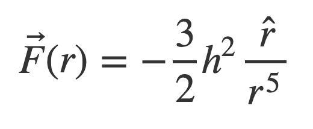
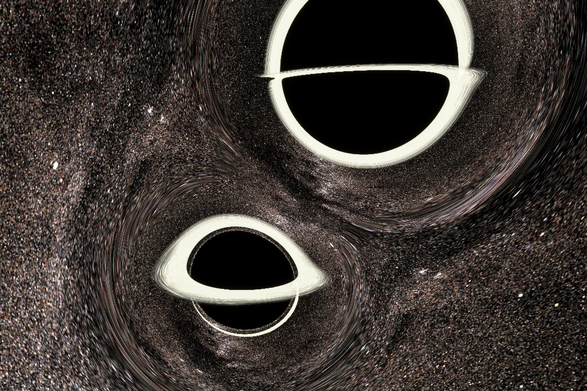
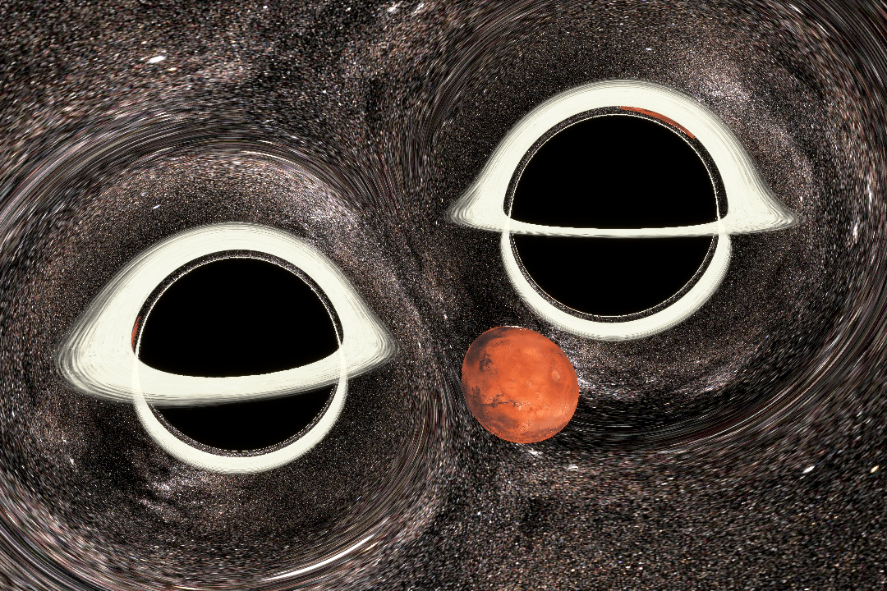
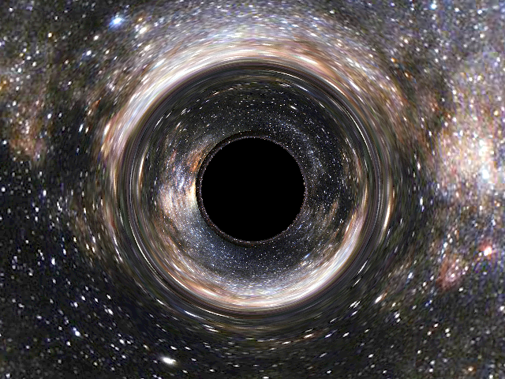
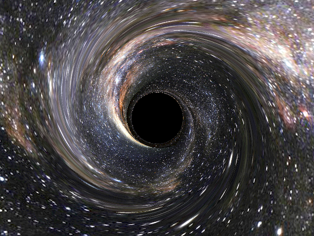
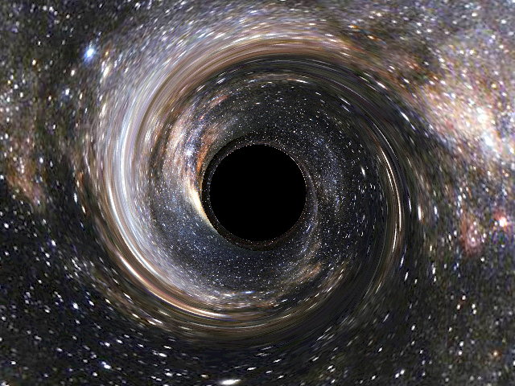
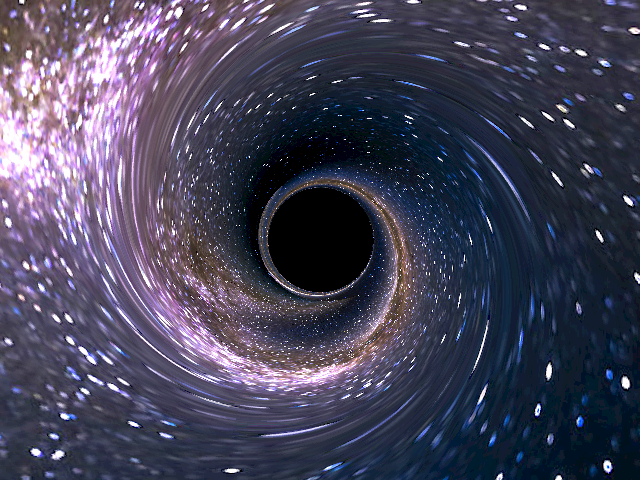

Abstract
Our goal in going “Beyond One Black Hole” was to render black holes scenes that were more complex than any we could find online, including dual black hole systems, systems with other proximal celestial objects, and scenes from non-stationary perspectives. We decided that building on top of an existing code base would allow us to explore these complexities, and by building up from the starless project by ratonels, we were able to focus on our creative goals. Our modifications enable the user to render multiple black holes of varying radii, render rotating black holes, add nearby celestial objects, and generate gifs of black holes as they are seen from varying perspectives.
Multiple Black Holes and Celestial Bodies
The original renderer only supported one black hole, so a seemingly simple task was adding a second one. This turned out to be more challenging than expected because of the assumptions that the original code made, including assuming that the black hole was always centered at the origin and that its radius was always one. As a result, these values were hard-coded into all of the calculations and it wasn't always clear where to add the new parameters. Additionally, the original renderer used some tricks to find that the trajectory of a photon was given as a solution to a relatively simple system where there was one force pulling the particle to the black hole:

We made the assumption that the trajectories under the influence of two black holes would simply be the result of applying this force once for each black hole. Although this mathematically isn't justified by the original derivation, perceptually it seems to give the right effects.
We also added in the ability to place other celestial objects in the scene such as a planet or the sun - below is an example of placing Mars between two black holes. This was done using texture maps found online. In order to determine which objects were in front of others, we adapted the original code's method of alpha blending - if a photon hadn't hit an object, it was considered transparent, but if it had, then it was considered opaque and any future collisions would have no effect on the resulting color. In the below image, we can see how the black holes bend the light so that little slivers of Mars appear around the black holes' edges.
|  |  |
Gifs
Originally, a gif generator was not a proposed part of the project. The idea came about as a solution to the problem of rendering a scene from the
perspective of a non-stationary observer. After I was unable to implement our initial idea of having an observer moving at relativistic speeds, I still wanted to be able to deliver
some version of adding a non-stationary perspective.
The .scene files from the original ratonels project have a field that specifies the camera position in Schwarzschild coordinates, and I realized I could specify a new field of the .scene files
that gives start and end coordinates for a 'moving' camera. In order to implement the gif maker, I first added parsing for the [gif] section I added to the .scene file's fields. The user can specify start and end positions for the gif as well as the
frame rate, number of frames, and file name. The tracer.py script parses these fields, and then gives control to the gif.py script. The function make_gif in gif.py then calls tracer.py with the appropriate arguments to render each frame of the gif. The frames are interpolated between the start and end positions in steps determined by the number of frames. Once
all of the frames have rendered, gif.py calls a function of the imageio module in order to stitch the frames into a gif.
The most difficult part of this implementation was how to control calling tracer.py, as the gif specifications are a section of the .scene file, which is also used to specify parameters of each frame. Since I call tracer.py to render each frame, and each frame is specified by a .scene file, I needed a way of shifting control after having parsed the [gif] section of a scene (without generating new .scene files). I ended up adding a flag as a program argument
in order to specify when frames are being rendered for a gif rather than as one-off renders.
Working with the existing repo was challenging (especially in this case as it involved advanced physics), and the task of implementing a non-stationary observer was difficult, as the original author did not make design decisions with this in mind. I found the .gif work-around
to be satisfying, as it proved to me that I could write a program that interacts with something I didn't completely understand and still get interesting results.

|

|

|

|
Kerr Black Hole
Because implementing high-fidelity rotation would necessitate a complete change in coordinates and the reworking for many integration shortcuts that the original author, rantonels, used, we decided to implement a less accurate but more performant version of rotation. We specified a distance range outside of the event horizon to be rotated, and added perpendicular forces to velocity in order to get a spiral effect. We also tried blending two separate renders, a Schwarzschild black hole and an unrealistic “spiral” black hole, via the Python Image Library, but the features weren’t powerful enough to combine images with anything other than alpha values and simple masks.
|

|

|
|

|

|
Contributions
Hung-wei Chuang:
-Rotating black hole renders with different backgrounds
-Preliminary renders of moving observers
Jacob Mimms:
-made video for milestone submission
-implemented gif maker to simulate motion
-formatted website
Elliot Stahnke:
-made final submission video
-implemented multiple black holes of different sizes
-implemented other celestial bodies
References
Original black hole renderer: http://rantonels.github.io/starless/
Texture maps: https://www.solarsystemscope.com/